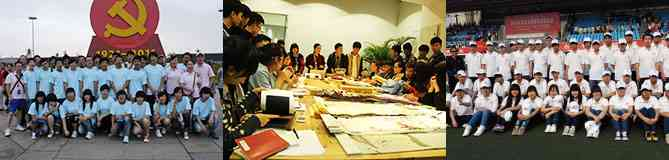

北京市中关村学院（北京市海淀区职工大学）是目前国内唯一的一所由政府举办的技术型大学，于1958年建校，2006年率先在全国所有正规大学中迈出了我国大学教育改革的第一步，率先实施了“学历教育+技能教育”最新型的大学教育改革模式！学院学历加技能专业，主要有：环境艺术设计、数字影视动画、传媒艺术设计、移动通讯、转件开发与应用、云计算与大数据六大类。
我院教学管理严格，拥有一支师德优良、学术造诣深、教学经验丰富、专兼职相结合的教学师资队伍，紧紧围绕北京重点发展的计算机产业、软件产业等以电子信息为核心及其产业链对人才的需求，为社会培养了大批既具备本专业基础理论知识和实际技能，又具有技术服务和经营管理的复合型人才。专业教师都是具有五年以上实践经验的高级工程师，面对面授课，手把手指导；课外由生活老师、专职教官对学生进行全方位、全天化的半军队式管理；学校在企业设有实训基地，校企合作，确保所有毕业学生百分之百在京高薪就业。
学院立足中关村，服务首都，辐射全国，面向世界。学院占地面积约75.8亩，建筑面积约为24000平方米。学院各类高等教育在校生总数约四千人左右，非学历培训每年保持在一万人次左右。学院还与中央民族大学、北京林业大学合作开办本科及研究生专业。学院二分院属脱产全日制学历教育校区，地处中关村环保科技园区，交通便利，配套设施齐全，是海淀区重点支持的北部新区职业技能教育基地。教学和实训软、硬件设备先进。进取、文雅、敏锐、豁达、亲和的中关村学院欢迎你！